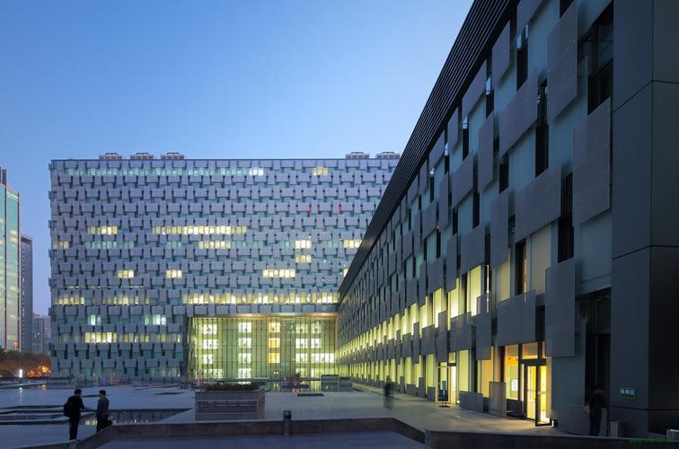

时间：2023-05-15 访问量：1205
 伊戎陪诊，助您就医无忧！
伊戎陪诊，助您就医无忧！
我是伊戎的专职陪诊员，今天陪诊的老人是从云南来北京就医的，她的孩子有时无法陪伴，便通过微信小程序找到了“伊戎陪诊”，并嘱咐我不要和他母亲说是陪诊师，就说是她的朋友。我依约到火车站接上老人，老人由于风湿病（类风湿关节炎）腿脚不太方便，就选择了在北京协和医院附近帮老人安排好住处，第二天上午带老人到医院就诊。
就诊的时候“我告诉老人什么都不用管，安心看病就行，剩下的事情由我来操办”，从取号、缴费、取单子到检查、领报告老人都不用操心，我就像子女一样陪伴着老人，除了看病时和医生交流病情，大部分的时间，她只需要在椅子上休息。就医结束，帮着老人办理了退房手续，并去火车站送老人坐上回老家的车，老人家非常感谢，要了我的住址，说回去要给我邮寄土特产。老人的孩子给我打电话非常感谢我，也对伊戎陪诊的专业性非常认可。
科普分享|内容摘自三甲医院专家文章
类风湿关节炎
一、症状
类风湿关节炎是一种以慢性进行性关节病变为主的自身免疫性疾病，对称性的多关节炎，以双手、腕、肘、膝、踝和足关节受累最常见。同时患者可伴有发热、贫血、皮下结节、血管炎、心包炎及淋巴结肿大等关节外表现，血清中可有多种自身抗体，未经正确治疗的类风湿关节炎可反复的发作，迁延多年，最终导致晚期手指、碗、肘、膝、踝等关节变形及功能丧失，手X线片见骨质疏松、关节面破坏及关节腔狭窄。
类风湿性关节炎的病理改变主要表现为关节的滑膜炎，随着病情的进展，以后可波及到关节软骨、骨组织、关节韧带、肌腱以及浆膜、心、肺和眼等结缔组织。关节受累表现为滑膜炎症、渗出、细胞增殖、肉芽肿形成，当累及软骨和骨质时造成软骨及骨组织破坏出现关节畸形，最后导致关节强直及功能障碍。
二、初发原因预防
风湿病是一个可以预防的疾病。风湿热的发病与A组溶血性链球菌感染有十分密切的关系，因此预防链球菌感染是预防风湿热的关键。具体措施如下：
1、加强体育锻炼，提高身体素质，增强机体的抗病能力，是预防上呼道链球菌感染的积极措施。
2、提高人们的生活水平，改善居住环境，注意通风、向阳、干燥，尽量避免潮湿、寒冷和拥挤。
3、对于儿童和青少年，更应积极预防链球菌感染，如急性扁桃体炎，咽炎、猩红热、急性中耳炎和急性淋巴结炎等。一旦发现上述感染，应积极进行有效的治疗。治疗时首选青霉素，对青霉素过敏者应用红霉素，疗程不少于10天。抑菌药物对预防风湿病的作用较差。
对症医院推荐（仅供参考）
中国医学科学院北京协和医院
复旦排行：全国风湿免疫科排行榜第1名
北京大学人民医院
复旦排行：全国风湿免疫科排行榜第2名
上海交通大学医学院附属仁济医院
复旦排行：全国风湿免疫科排行榜第3名
南京大学医学院附属鼓楼医院
复旦排行：全国风湿免疫科排行榜第4名
四川大学华西医院
复旦排行：全国风湿免疫科排行榜第5名
 4008382558
4008382558